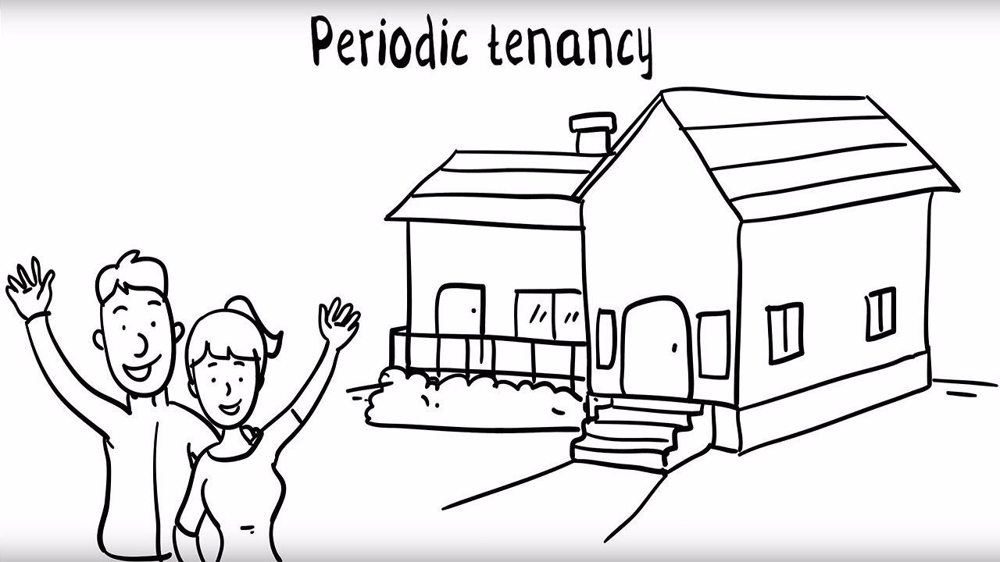
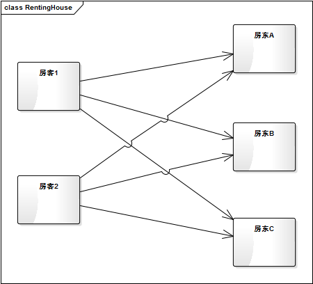
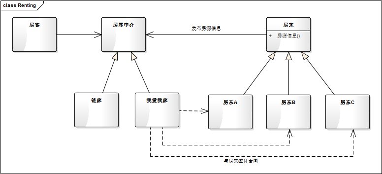
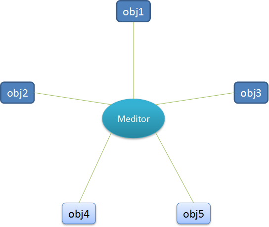
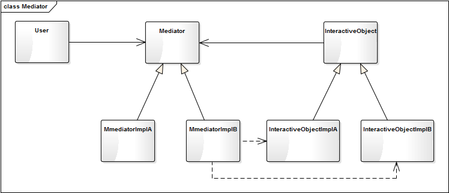
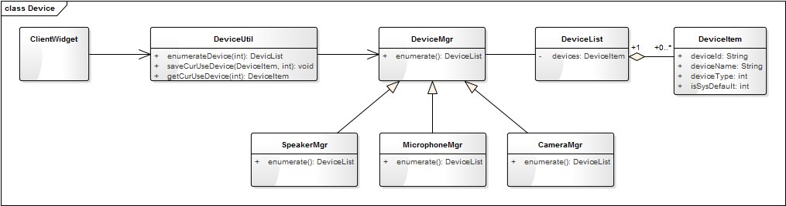

- 00 生活中的设计模式：启程之前，请不要错过我.md.html
- 01 监听模式：坑爹的热水器.md.html
- 02 适配模式：身高不够鞋来凑.md.html
- 03 状态模式：人与水的三态.md.html
- 04 单例模式：你是我生命的唯一.md.html
- 05 职责模式：我的假条去哪了.md.html
- 06 中介模式：找房子问中介.md.html
- 07 代理模式：帮我拿一下快递.md.html
- 08 装饰模式：你想怎么穿就怎么穿.md.html
- 09 工厂模式：你要拿铁还是摩卡.md.html
- 10 迭代模式：下一个就是你了.md.html
- 11 组合模式：自己组装电脑.md.html
- 12 构建模式：想要车还是庄园.md.html
- 13 克隆模式：给你一个分身术.md.html
- 14 策略模式：怎么来不重要，人到就行.md.html
- 15 命令模式：大闸蟹，走起！.md.html
- 16 备忘模式：好记性不如烂笔头.md.html
- 17 享元模式：颜料很贵必须充分利用.md.html
- 18 外观模式：学妹别慌，学长帮你.md.html
- 19 访问模式：一千个读者一千个哈姆雷特.md.html
- 20 生活中的设计模式：与经典设计模式的不解渊源.md.html
- 21 生活中的设计模式：那些未完待续的设计模式.md.html
- 22 深入解读过滤器模式：制作一杯鲜纯细腻的豆浆.md.html
- 23 深入解读对象池技术：共享让生活更便捷.md.html
- 24 深入解读回调机制：把你技能亮出来.md.html
- 25 谈谈我对设计模式的理解.md.html
- 26 谈谈我对设计原则的思考.md.html
- 27 谈谈我对项目重构的看法.md.html
- 捐赠
06 中介模式：找房子问中介
【故事剧情】
人在江湖漂，岂能顺心如意？与大多数毕业生一样，第一份工作很难持续两年以上。Tony 也在一家公司工作了一年半后，换了一个东家。
在北京这个硕大的城市里，换工作基本就意味着要换房子。不得不说，找房子是一件烦心而累人的工作。
- 你首先要知道自己要怎样的房子：多大面积（多少平米），什么价位，是否有窗户，是否有独卫。
- 要去网上查找各种房源信息，找到最匹配的几个户型。
- 之后要去电话咨询，过滤虚假信息和过时信息。
- 最后，也是最累人的一步，要去实地考查，看看真实的房子与网上的信息是否相符，房间是否有异味，周围设施是否齐全。这一步你可能会从东城穿越西城，再来到南城，而后又折腾去北城……想想都累！
- 最后的最后，你还要与各种脾性的房东进行周旋，去讨价还价。
Tony 想了想，还是找中介算了。在北京这座城市，你几乎找不到一手房东，90%的房源信息都掌握在房屋中介手中！既然都找不到一手房东，还不如找一家正规点的中介。
于是 Tony 找到了我爱我家，认识了里面的职员 Vangie。Vangie 问了他对房子的要求。Tony 说：“18平米左右，要有独卫，要有窗户，最好是朝南，有厨房更好！价位在2000左右。”Vangie 立马就说：“上地西里有一间，但没有厨房；当代城市家园有两间，一间主卧，一间次卧，但卫生间是共用的；美和园有一间，比较适合你，但价格会贵一点。” 真是了如指掌啊！说完就带着 Tony 开始看房了……
一天就找到了还算合适的房子。但不得不再次吐槽：北京的房子真 TM 贵啊，18平米，精装修，有朝南窗户，一个超小（1m宽不到）的阳台，卫生间5人共用，厨房共用，价格要2600每月。押一付三，加一个月的中介费，一次交了一万多，要开始吃土了，内心滴了无数滴血……

用程序来模拟生活
上面的生活场景中，Tony 通过中介来找房子，因为找房子的过程实在太繁琐了，而且对房源信息不了解。通过中介，他省去了很多麻烦的细节，合同也是直接跟中介签，你甚至可能都不知道房东是谁。
我们将通过程序来模拟一下上面找房子的过程。
源码示例：
class HouseInfo:
"房源信息"
def __init__(self, area, price, hasWindow, bathroom, kitchen, address, owner):
self.__area = area
self.__price = price
self.__window = hasWindow
self.__bathroom = bathroom
self.__kitchen = kitchen
self.__address = address
self.__owner = owner
def getAddress(self):
return self.__address
def getOwnerName(self):
return self.__owner.getName()
def showInfo(self, isShowOwner = True):
print("面积:" + str(self.__area) + "平米",
"价格:" + str(self.__price) + "元",
"窗户:" + ("有" if self.__window else "没有"),
"卫生间:" + self.__bathroom,
"厨房:" + ("有" if self.__kitchen else "没有"),
"地址:" + self.getAddress(),
"房东:" + self.getOwnerName() if isShowOwner else "")
class HousingAgency:
"房屋中介"
def __init__(self, name):
self.__houseInfos = []
self.__name = name
def getName(self):
return self.__name
def addHouseInfo(self, houseInfo):
self.__houseInfos.append(houseInfo)
def removeHouseInfo(self, houseInfo):
for info in self.__houseInfos:
if(info == houseInfo):
self.__houseInfos.remove(info)
def getSearchCondition(self, description):
"这里有一个将用户描述信息转换成搜索条件的逻辑。(为节省篇幅这里原样返回描述)"
return description
def getMatchInfos(self, searchCondition):
"根据房源信息的各个属性查找最匹配的信息。(为节省篇幅这里略去匹配的过程，全部输出)"
print(self.getName(), "为您找以下最适合的房源：")
for info in self.__houseInfos:
info.showInfo(False)
return self.__houseInfos
def signContract(self, houseInfo, time):
"与房东签订协议"
print(self.getName(), "与房东", houseInfo.getOwnerName(), "签订", houseInfo.getAddress(),
"的房子的的租赁合同，租期", time, "年。 合同期内", self.getName(), "有权对其进行使用和转租！")
def signContracts(self, time):
for info in self.__houseInfos :
self.signContract(info, time)
class HouseOwner:
"房东"
def __init__(self, name, address):
self.__name = name
self.__address = address
self.__houseInfo = None
def getName(self):
return self.__name
def getAddress(self):
return self.__address
def setHouseInfo(self, area, price, hasWindow, bathroom, kitchen):
self.__houseInfo = HouseInfo(area, price, hasWindow, bathroom, kitchen, self.getAddress(), self)
def publishHouseInfo(self, agency):
agency.addHouseInfo(self.__houseInfo)
print(self.getName() + "在", agency.getName(), "发布房源出租信息：")
self.__houseInfo.showInfo()
class Custom:
"房客，租房人"
def __init__(self, name):
self.__name = name
def getName(self):
return self.__name
def findHouse(self, description, agency):
print("我是" + self.getName() + ", 我想要找一个\"" + description + "\"的房子")
print()
return agency.getMatchInfos(agency.getSearchCondition(description))
def seeHouse(self, houseInfos):
"去看房，选择最使用的房子。(这里省略看房的过程)"
size = len(houseInfos)
return houseInfos[size-1]
def signContract(self, houseInfo, agency, time):
"与中介签订协议"
print(self.getName(), "与中介", agency.getName(), "签订", houseInfo.getAddress(),
"的房子的租赁合同, 租期", time, "年。合同期内", self.__name, "有权对其进行使用！")
测试代码：
def testRenting():
myHome = HousingAgency("我爱我家")
zhangsan = HouseOwner("张三", "上地西里");
zhangsan.setHouseInfo(20, 2500, 1, "独立卫生间", 0)
zhangsan.publishHouseInfo(myHome)
lisi = HouseOwner("李四", "当代城市家园")
lisi.setHouseInfo(16, 1800, 1, "公用卫生间", 0)
lisi.publishHouseInfo(myHome)
wangwu = HouseOwner("王五", "金隅美和园")
wangwu.setHouseInfo(18, 2600, 1, "独立卫生间", 1)
wangwu.publishHouseInfo(myHome)
print()
myHome.signContracts(3)
print()
tony = Custom("Tony")
houseInfos = tony.findHouse("18平米左右，要有独卫，要有窗户，最好是朝南，有厨房更好！价位在2000左右", myHome)
print()
print("正在看房，寻找最合适的住巢……")
print()
AppropriateHouse = tony.seeHouse(houseInfos)
tony.signContract(AppropriateHouse, myHome, 1)
输出结果：
张三在 我爱我家 发布房源出租信息：
面积:20平米 价格:2500元 窗户:有 卫生间:独立卫生间 厨房:没有 地址:上地西里 房东:张三
李四在 我爱我家 发布房源出租信息：
面积:16平米 价格:1800元 窗户:有 卫生间:公用卫生间 厨房:没有 地址:当代城市家园 房东:李四
王五在 我爱我家 发布房源出租信息：
面积:18平米 价格:2600元 窗户:有 卫生间:独立卫生间 厨房:有 地址:金隅美和园 房东:王五
我爱我家 与房东 张三 签订 上地西里 的房子的的租赁合同，租期 3 年。 合同期内 我爱我家 有权对其进行使用和转租！
我爱我家 与房东 李四 签订 当代城市家园 的房子的的租赁合同，租期 3 年。 合同期内 我爱我家 有权对其进行使用和转租！
我爱我家 与房东 王五 签订 金隅美和园 的房子的的租赁合同，租期 3 年。 合同期内 我爱我家 有权对其进行使用和转租！
我是Tony, 我想要找一个"18平米左右，要有独卫，要有窗户，最好是朝南，有厨房更好！价位在2000左右"的房子
我爱我家 为您找以下最适合的房源：
面积:20平米 价格:2500元 窗户:有 卫生间:独立卫生间 厨房:没有 地址:上地西里
面积:16平米 价格:1800元 窗户:有 卫生间:公用卫生间 厨房:没有 地址:当代城市家园
面积:18平米 价格:2600元 窗户:有 卫生间:独立卫生间 厨房:有 地址:金隅美和园
正在看房，寻找最合适的住巢……
Tony 与中介 我爱我家 签订 金隅美和园 的房子的租赁合同, 租期 1 年。合同期内 Tony 有权对其进行使用！
从剧情中思考中介模式
从这个示例中我们知道，Tony 找房子并不需要与房东进行直接交涉，甚至连房东是谁都不知道，他只需要与中介进行交涉即可，一切都可通过中介完成。使得他找房子的过程，由这样一个状态：

变成了这样一个状态：

这无疑给他减少了很多的麻烦。
这种由中介来承接房客与房东之间的交互的过程，在程序中叫做中介模式。用一个中介对象来封装一系列的对象交互，中介者使各对象不需要显式地相互引用，从而使其耦合松散，而且可以独立地改变它们之间的交互。中介者模式又称为调停者模式，它是一种对象行为型模式。
中介模式的模型抽象
在很多系统中，很容易多个类相互耦合，形成了网状结构。而中介模式将这种网状结构分离为星型结构。
原始的网状结构：

有中介者的星型结构：

类图
根据上面的示例代码，我们可以大致地构建出中介模式的类图关系如下：

我再举一个实际应用中的例子。不管是 QQ、钉钉这类支持视频通迅的社交软件，还是 51Talk、TutorABC、ABC360 这类在线互联网教育的产品，都需要和通迅设备（扬声器、麦克风、摄像头）进行交互。在移动平台各类通迅设备一般只会有一个，但在 PC 端（尤其是 Windows 电脑），你可能会有多个扬声器、多个麦克风，甚至有多个摄像头，还可能会在通话的过程中由麦克风 A 切换到麦克风 B。如何与这些繁杂的设备进行交互呢？
聪明的你一定会想到：用中介模式啊！对，就是它。我们看一下如何设计它的结构。

上图中 DeviceUtil 其实就是中介者，客户端界面通过 DeviceUtil 这个中介与设备进行交互，这样界面类 ClientWidget 就不用同时维护三个 DeviceMgr 的对象，而只要与一个 DeviceUtil 的对象进行交互就可以。ClientWidget 可通过 DeviceUtil 枚举各类型（扬声器、麦克风、摄像头）的设备，同时可以通过 DeviceUtil 来读取和保存当前正在使用的各类型设备。
这时，可能有读者要问了：为什么 DeviceUtil 到 DeviceMgr 的依赖指向与模型图不一样啊！这是因为这个应用中 ClientWidget 与 DeviceMgr 是单向的交互，只有 ClientWidget 调用 DeviceMgr，而一般不会有 DeviceMgr 调用 ClientWidget 的情况。而模型图是同时支持双向的交互，InteractiveObject 通过直接依赖与 Mediator 进行交互，而 User 也通过 Mediator 间接地与 InteractiveObjectImplA、InteractiveObjectImplB 进行交互（图中虚线表示）。
模型说明
- 中介模式的优点：
- Mediator 将原本分布于多个对象间的行为集中在一起，作为一个独立的概念并将其封装在一个对象中，简化了对象之间的交互。
- 将多个调用者与多个实现者间多对多的交互关系，转换为一对多的交互，一对多的关系更易于理解、维护和扩展。大大减少了多个对象相互交差引用的情况。
- 中介模式的缺点：
通过中介找房子给我们带来了很多的便利，但也存在诸多明显问题，比如，很容易遇到黑中介（各种不规范和坑诈，也许你正深陷其中），或者高昂的中介费（本就受伤的心灵又多补了一刀）。
- 中介者承接了所有的交互逻辑，交互的复杂度变成了中介的复杂度，中介者类会变得越来越庞大和复杂，难于维护。
- 中介者出问题会导致多个使用者同时出问题。
应用场景
- 一组对象以定义良好但是复杂的方式进行通信。产生的相互依赖关系结构混乱且难以理解。
- 一个对象引用其他很多对象并且直接与这些对象通信，导致难以复用该对象。
- 想通过一个中间类来封装多个类中的行为，而又不想生成太多的子类。
© 2019 - 2023 Liangliang Lee. Powered by gin and hexo-theme-book.